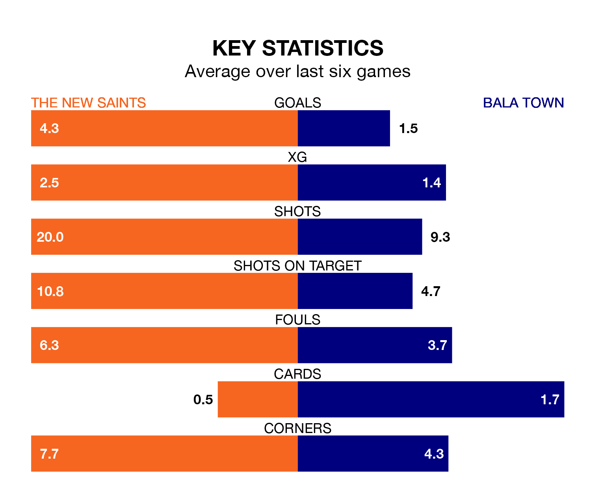

Two of the Welsh Premier League's top sides face each other at the Park Hall Stadium in Tuesday's late kick-off, when table-topping The New Saints host third-placed Bala Town.
The New Saints have picked up 27 wins and two draws from 29 games so far this season, and sit 34 points above the visitors going into the 7.45pm match.
The Lakesiders, meanwhile, have won 13 and drawn 10, picking up 49 points.
With 106 goals in 29 games so far this season, The New Saints are the league's highest scorers with 3.7 goals per game. And they are conceding fewer than average, letting in 17 goals at a rate of 0.6 per game.
Bala, meanwhile, are below average scorers, with 1.2 goals per game, compared to a league average of 1.5. They have conceded 0.9 goals per game.
The Saints are in exceptional form in the Welsh Premier League, with six wins and no losses from their last six games.
With three wins and two draws over that period, Town's form is much worse – they have taken 11 points from 18, compared to the home team's 18.
In the last 10 years, The New Saints and Bala have played each other on 39 occasions. The New Saints won 27 of them, Bala one, and they drew 11 times.
On average, the Saints scored 2.3 goals and the Lakesiders 0.6 in those matches.
Their last meeting was on February 9, when The New Saints won 1-0 away.
The New Saints' last match was on Friday, a 7-1 win against Caernarfon Town, with Adrian Cieślewicz (two), Declan McManus (two), Ben Clark, Blaine Hudson and Daniel Redmond getting the goals for the Saints.
Bala drew 1-1 with Newtown last time out, also on Friday, with Kieran Lewis Smith on the scoresheet.
Updated: 11:20 (UTC), 09/04/24